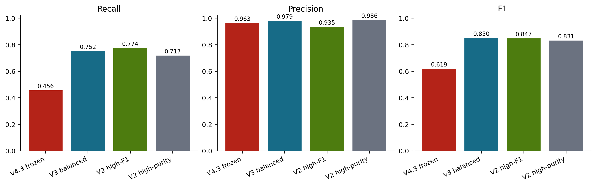
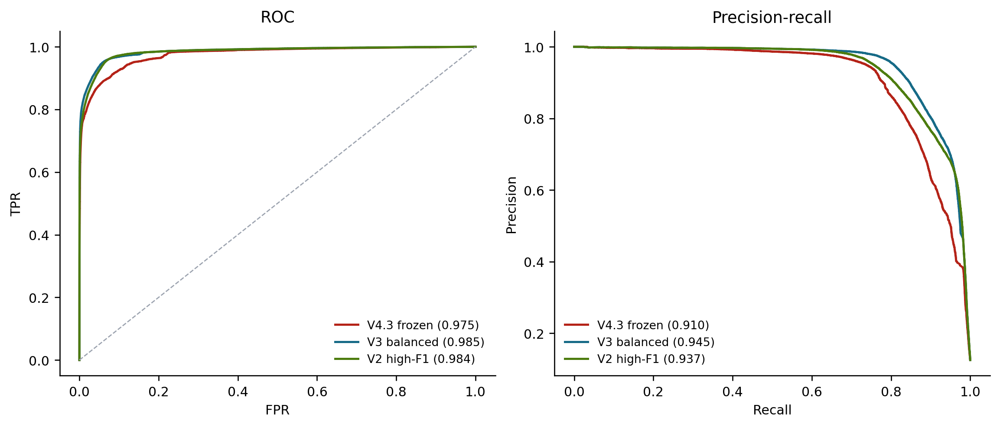
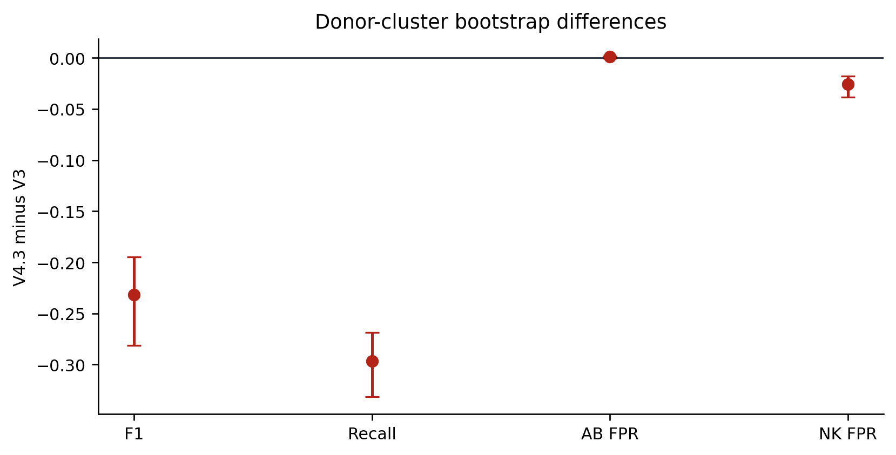
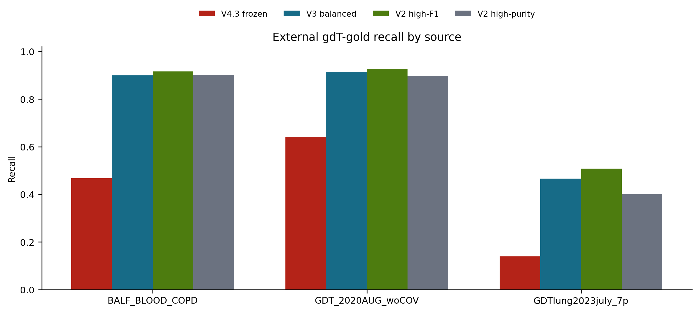
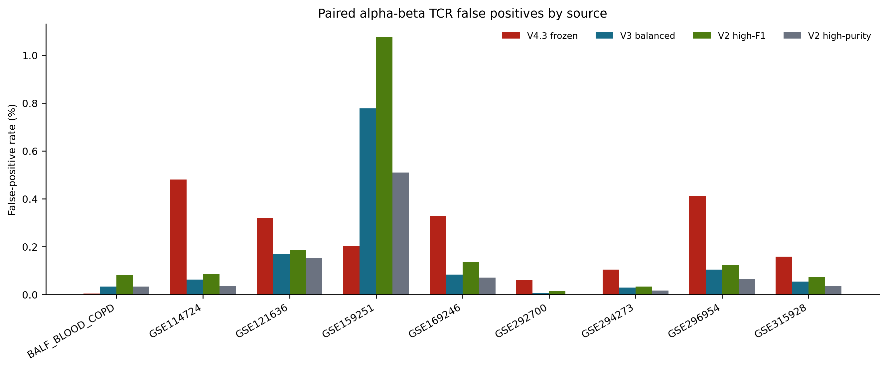
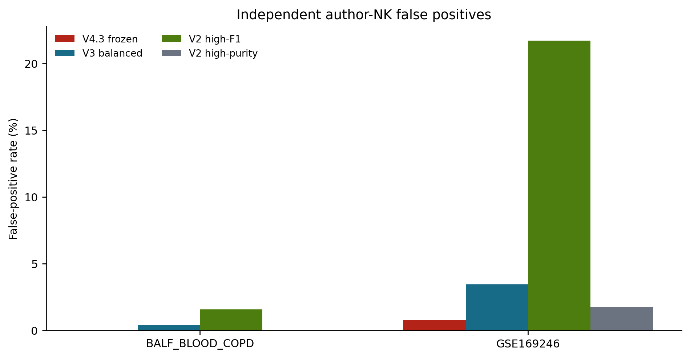
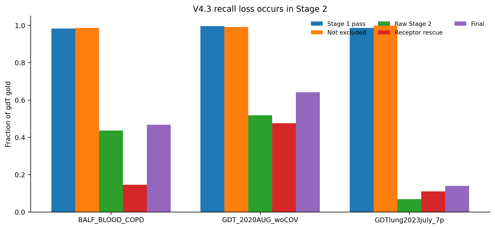
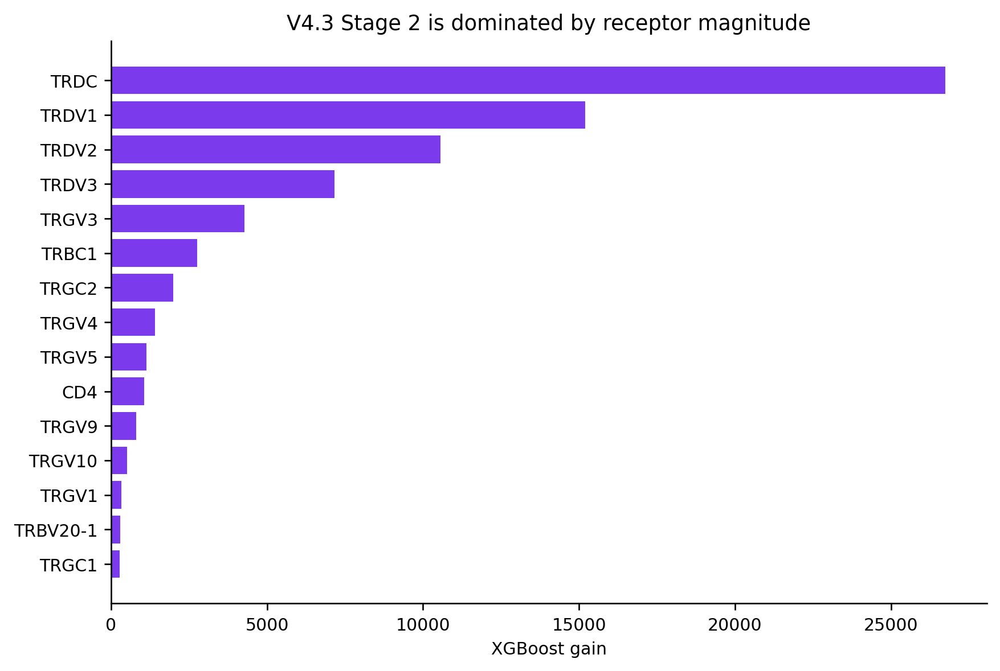
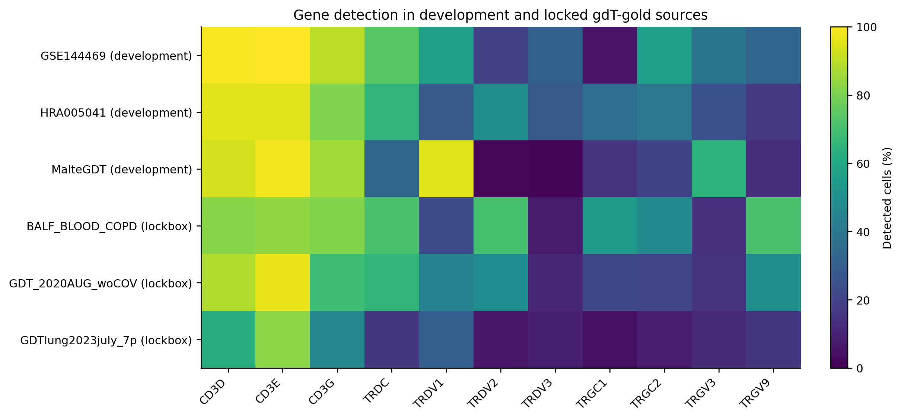
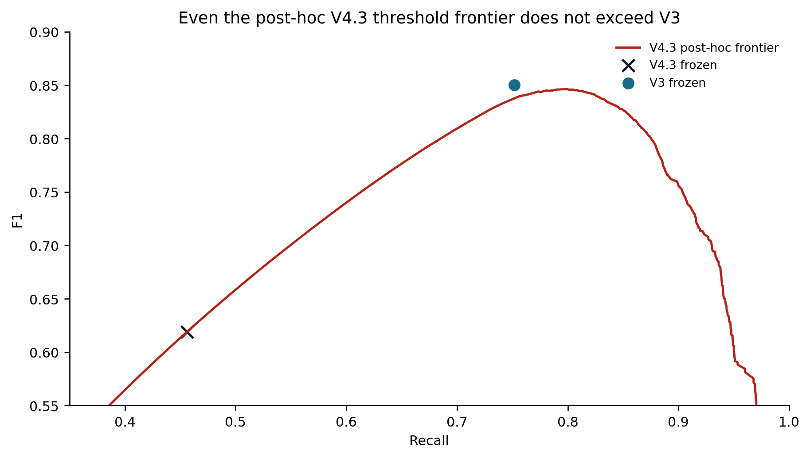

gdTAI V4 Final Evaluation
1. Evaluation Design
The final V4.3 candidate, all thresholds, receptor-rescue rules, and the feature contract were frozen using development cells only. The external lockbox was checksum-bound before scoring and contained 335,479 cells: 41,931 gdT gold, 285,524 paired-alpha-beta gold, and 8,024 independent author-NK negatives. V4.3, V3, and both V2 modes were recomputed from the same raw-count matrix and identical cells.
V4.3 architecture: a 36-gene high-recall T-lineage support gate followed by a 158-gene receptor classifier. Stage 2 uses 153 individual TCR genes plus CD3D/E/G, CD4, and FOXP3. KLRD1, NKG7, GNLY, FCER1G, TYROBP, and the shared cytotoxic program are absent from both stages. Stage 1 probability is not supplied to Stage 2.
Implementation integrity
| check | value | result |
|---|---|---|
| lockbox cells matching original frozen cache | 327455.000 | PASS |
| new author-NK cells requiring direct extraction | 8024.000 | EXPECTED |
| effective V4 genes compared | 183.000 | PASS |
| feature values compared | 59924265.000 | PASS |
| values differing by >1e-6 | 0.000 | PASS |
| maximum absolute feature difference | 0.000 | PASS |
2. Headline Performance
| model | predicted_positive | precision | recall | f1 | abt_fpr | author_nk_fpr | precision_at_1pct_prevalence |
|---|---|---|---|---|---|---|---|
| V4.3 frozen | 19872 | 96.25% | 45.62% | 61.90% | 0.24% | 0.76% | 64.48% |
| V3 balanced | 32210 | 97.87% | 75.18% | 85.04% | 0.15% | 3.35% | 76.47% |
| V2 high-F1 | 34744 | 93.45% | 77.44% | 84.70% | 0.20% | 21.07% | 50.24% |
| V2 high-purity | 30501 | 98.63% | 71.74% | 83.06% | 0.10% | 1.68% | 83.54% |



Ranking metrics
| model | roc_auc | average_precision |
|---|---|---|
| V4.3 frozen | 0.975 | 0.910 |
| V3 balanced | 0.985 | 0.945 |
| V2 high-F1 | 0.984 | 0.937 |
Donor-cluster bootstrap
| older_model | delta_f1_median | delta_f1_ci_low | delta_f1_ci_high | probability_delta_f1_gt_0 | delta_recall_median | delta_recall_ci_low | delta_recall_ci_high |
|---|---|---|---|---|---|---|---|
| V3 balanced | -0.232 | -0.281 | -0.195 | 0.000 | -0.296 | -0.332 | -0.269 |
| V2 high-F1 | -0.228 | -0.283 | -0.187 | 0.000 | -0.319 | -0.356 | -0.288 |
| V2 high-purity | -0.212 | -0.254 | -0.180 | 0.000 | -0.261 | -0.297 | -0.239 |
3. Dataset-by-Dataset Results

| source_gse_id | V4.3 frozen | V3 balanced | V2 high-F1 | V2 high-purity |
|---|---|---|---|---|
| BALF_BLOOD_COPD | 46.71% | 89.91% | 91.55% | 90.02% |
| GDT_2020AUG_woCOV | 64.15% | 91.40% | 92.57% | 89.74% |
| GDTlung2023july_7p | 13.92% | 46.66% | 50.81% | 40.00% |


Paired-alpha-beta false-positive rates
| source_gse_id | V4.3 frozen | V3 balanced | V2 high-F1 | V2 high-purity |
|---|---|---|---|---|
| BALF_BLOOD_COPD | 0.00% | 0.03% | 0.08% | 0.03% |
| GSE114724 | 0.48% | 0.06% | 0.09% | 0.04% |
| GSE121636 | 0.32% | 0.17% | 0.18% | 0.15% |
| GSE159251 | 0.20% | 0.78% | 1.08% | 0.51% |
| GSE169246 | 0.33% | 0.08% | 0.14% | 0.07% |
| GSE292700 | 0.06% | 0.01% | 0.01% | 0.00% |
| GSE294273 | 0.10% | 0.03% | 0.03% | 0.02% |
| GSE296954 | 0.41% | 0.10% | 0.12% | 0.07% |
| GSE315928 | 0.16% | 0.05% | 0.07% | 0.04% |
Author-NK false-positive rates
| source_gse_id | V4.3 frozen | V3 balanced | V2 high-F1 | V2 high-purity |
|---|---|---|---|---|
| BALF_BLOOD_COPD | 0.00% | 0.39% | 1.57% | 0.00% |
| GSE169246 | 0.79% | 3.45% | 21.71% | 1.74% |
4. Why V4.3 Failed

| source_gse_id | n_gdT_gold | stage1_pass | not_cd4_treg_excluded | raw_stage2_pass | receptor_rescue | final_recall | v3_recall | v3_recovered_v4_missed |
|---|---|---|---|---|---|---|---|---|
| BALF_BLOOD_COPD | 852 | 98.24% | 98.59% | 43.54% | 14.55% | 46.71% | 89.91% | 375 |
| GDT_2020AUG_woCOV | 25904 | 99.53% | 99.07% | 51.78% | 47.56% | 64.15% | 91.40% | 7332 |
| GDTlung2023july_7p | 15175 | 98.64% | 99.76% | 6.85% | 10.95% | 13.92% | 46.66% | 5023 |


The final Stage 2 threshold was 0.994098, selected from grouped development OOF predictions. Lowering it after seeing the lockbox would be leakage. A diagnostic-only threshold sweep nevertheless shows whether calibration alone could solve the problem.

| diagnostic | threshold | f1 | recall | precision | abt_fpr | author_nk_fpr |
|---|---|---|---|---|---|---|
| posthoc_maximum_f1 | 0.270 | 84.64% | 79.60% | 90.36% | 0.94% | 10.95% |
| minimum_70pct_recall | 0.801 | 80.94% | 70.00% | 95.94% | 0.38% | 1.83% |
| match_v3_recall | 0.562 | 83.77% | 75.18% | 94.58% | 0.54% | 3.38% |
| minimum_80pct_recall | 0.246 | 84.62% | 80.00% | 89.81% | 1.02% | 11.28% |
| frozen_operating_point | 0.994 | 61.90% | 45.62% | 96.25% | 0.24% | 0.76% |
5. Iteration Record
| iteration | change | result |
|---|---|---|
| V4.1 GPU | Two-stage T/NK architecture | Stopped at Gate C; Stage 2 never ran |
| V4.2 | Repaired TCR joins, expression-independent truth, seven-source NK negatives | Failed development transfer; Malte recall 36.5% |
| V4.3 initial | Receptor-isolated Stage 2; removed Stage 1 probability | Passed development, but KLRD1 remained in Stage 1 |
| V4.3 final | Removed KLRD1/shared cytotoxic genes from both stages | Passed development; failed locked external superiority |
V4 development addressed the major known risks in sequence: weak NK labels, unsafe TCR joins, source leakage, shared cytotoxic genes, continuous Stage 1 leakage, and source-heldout evaluation. V4.3 is the first iteration to reach a clean common lockbox comparison, and it fails there.
6. Final Scientific Conclusion
This conclusion is scoped to the available evidence, not a claim that gdT classification can never improve. A future V4 attempt requires genuinely new independent positive and NK/alpha-beta cohorts, or a prespecified domain-generalization design with a new untouched final test. Until then:
- retain V3 balanced as the current default;
- retain V2 high-purity as a conservative annotation-assisted fallback;
- keep all V4.3 artifacts diagnostic and unpromoted;
- do not use lockbox-derived thresholds or feature changes in a release model.
Core hashes: V4 contract 05cb3c9cd9a94577849610263141b4ce499b564acc2dff77f4a3b2d274a09abe; lockbox f997e24b7be6e98692ba770d163916cbb359009ba5a7c3dfa1d7db6b3824f151. Model promotion status: false.